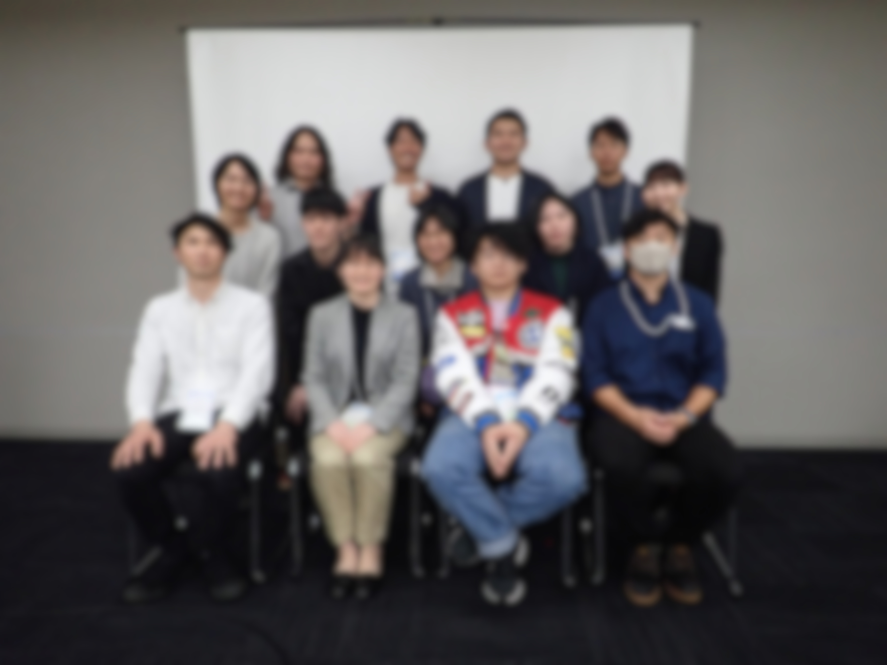

2026.03.29
第70回日本応用動物昆虫学会大会にて若手交流会を開催しました
学会期間中に若手交流会を開催しました。 学生・若手研究者150名以上が参加し、 研究紹介や情報交換を通じて活発な交流が行われました。
詳しくはこちら →活動報告
学会期間中に若手交流会を開催しました。 学生・若手研究者150名以上が参加し、 研究紹介や情報交換を通じて活発な交流が行われました。
詳しくはこちら →
第70回日本応用動物昆虫学会大会（熊本大会）にて、 小集会「応動昆若手の会主催 若手が描くキャリアの可能性：若手研究者・起業家・YouTuberが語るリアル」を開催しました
詳しくはこちら →